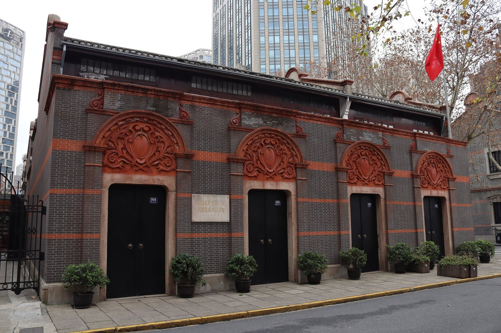
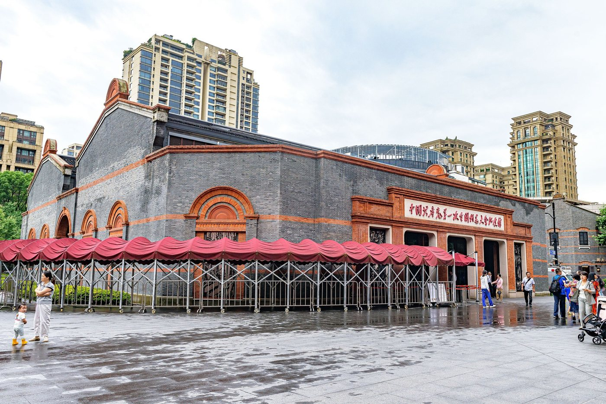
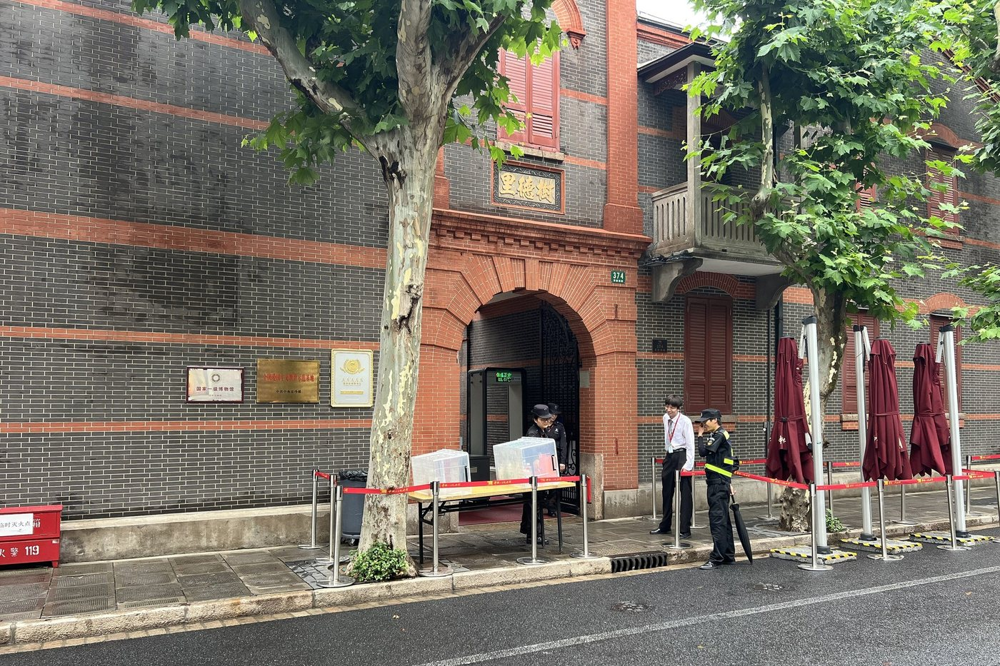

Memorial Hall and Site of the First National Congress of the CPC (with the Bowen Girls' School dormitory) 中共一大纪念馆 · 中共一大会址（含中共一大代表宿舍旧址／博文女校旧址）
Museum, original 1920 shikumen house · Huangpu
CheckedOfficial source read · 15 Nov 2026


See a museum and the house where the Communist Party opened its first congress. Free; shut Mondays.
Why it matters
On 23 July 1921, thirteen delegates (some sources say twelve) opened the Chinese Communist Party's first national congress in this rented shikumen house in the French Concession. A police raid on 30 July ended the meeting here, and the delegates finished on a boat at Jiaxing. The modest house shows how small and improvised the start was.
What to see
The original 1920 shikumen house, its meeting room laid out as in 1921; the Oath Hall; the museum 'Epoch-making Beginnings' (opened 2021, English signs). At the Bowen Girls' School (博文女校, reopened March 2026), delegates' rooms are recreated.
How to get there
Show: 请带我去中共一大纪念馆，黄陂南路374号. Expect an airport-style security check; no suitcases, flash or tripods. Bring your passport.
Local tip
Do the Bowen Girls' School first (book ahead), then walk 200 m to the Site. It reopened on 24 March 2026 after restoration.
Watch out
Bowen Girls' School needs a WeChat booking; a foreign visitor may be unable to book, and no walk-in rule is published. Summer evening openings (Jul-Aug 2026) were one-offs: assume 17:00 closing. The exhibition is the Party's own account; the meeting room is a reconstruction.
Did you know
The Chinese Communist Party's official birthday, 1 July, is not the day its First Congress opened: that was 23 July 1921, in a Shanghai lane house. Police searched it on 30 July; the delegates moved to a boat in Jiaxing.
The date 1 July was fixed later (Central Committee, June 1941); the meeting opened in a house in Xintiandi.
Caveat and sources
The 23 July date was fixed by later research. The site is free and, per a 28 Jul 2026 bureau notice, needs no booking; open 9:00-17:00, last entry 16:30, closed Mondays (including 30 Nov). The delegates' dormitory at 太仓路127号 is booking-only by WeChat; a foreign visitor may not be able to book.
What was checked, and what was not
Read on 15 Nov 2026
Official About page read 15 Nov 2026: free, no reservation, closed Monday. A 28 Jul 2026 notice shows Monday openings were a summer exception to 31 Aug. Xinhua (1 Oct 2026) reports 2.6 million visits in 2026.
Not checked
Whether a foreign passport can book the Bowen Girls' School (WeChat mini-program); its hours and fee; any notice for late November.
Sources
- Memorial Hall official site (About)zgyd1921.com Opens in a new tab
- Memorial Hall official site (English)zgyd1921.com Opens in a new tab
- The Paper (Shanghai culture and tourism notice, 28 Jul 2026)m.thepaper.cn Opens in a new tab
- Xinhua (Bowen Girls' School reopening, 24 Mar 2026)news.cn Opens in a new tab